For quite some time now, I have wanted to create a Java Android app entirely from scratch--without using build systems like Gradle or an IDE. Why?
- An empty project in Android Studio takes up a significant amount of disk space--around 40-50MB--and contains nearly 1,000 files. That’s quite overwhelming.
- To truly understand how a system works, one must learn to build it from first principles.
I have a very strong dislike for Gradle, so this project will serve as a template for bootstrapping other Android projects. I can't emphasize enough how much I dislike it when people overcomplicate simple things.
A Hello World program written in C is perhaps the very definition of simple--everyone has written it at least once--even arts graduates who picked up C in their college's optional CS classes.
#include <stdio.h>
int main(void) {
printf("Hello world!");
}
Now that is simple. It can be compiled into an executable using the system C compiler:
$ cc main.c
$ ./a.out
Hello world!
Below is a diagram illustrating the process pipeline:
In this case, the frontend C compiler abstracts the linking step of the executable. In reality, the frontend creates an object file and then uses a linker to combine it into an executable. The actual process looks something like this:
Building a Hello World app for Android requires considerably more steps than the familiar C counterpart. These steps are done by Android Studio automatically when the "New Project" and "Run" buttons are pressed. Doing them by hand will not only scratch the itch the developers have to do everything by hand, but also help us understand what tools and files are necessary (and what aren't) to build an app.
Setting Up the Build Environment
We will need the JDK (Java Development Kit) to build apps for Android. The quickest way to get it is by using the distro package manager. Use any of apt, pacman, yay, yum, dnf, nix-shell, etc.
We'll also want the Android SDK installed. We just need the command-line utilities to build the app, so we only download the Android Commandline Tools, which can be found here.
We create a directory for the SDK:
$ mkdir ~/android_sdk
$ SDK=~/android_sdk
$ cd $SDK
And download the cmdline-tools into that directory. sdkmanager is used to download the required tools and components for the target platform version.
$ curl -LO https://dl.google.com/android/repository/commandlinetools-linux-11076708_latest.zip
$ unzip -q commandlinetools-linux-11076708_latest.zip -d "$SDK"
$ "$SDK/cmdline-tools/bin/sdkmanager" --sdk_root="$SDK" --install \
"platforms;android-34" "build-tools;34.0.0" "platform-tools" "ndk;26.2.11394342"
If for some reason sdkmanager is not to be used, we can also download the components manually. We'll need build-tools for aapt, d8, etc, platform-tools for adb and an Android platform to target. We can skip downloading cmdline-tools if we are downloading everything manually.
$ curl -LO https://dl.google.com/android/repository/build-tools_r34-linux.zip
$ mkdir "$SDK/build-tools"
$ unzip -q build-tools_r34-linux.zip -d "$SDK/build-tools"
$ mv "$SDK/build-tools/android-14" "$SDK/build-tools/34.0.0"
$ curl -LO https://dl.google.com/android/repository/platform-34-ext7_r02.zip
$ mkdir "$SDK/platforms"
$ unzip -q platform-34-ext7_r02.zip -d "$SDK/platforms"
$ curl -LO https://dl.google.com/android/repository/platform-tools_r34.0.5-linux.zip
$ unzip -q platform-tools_r34.0.5-linux.zip -d "$SDK"
After downloading and unpacking everything, we set some variables for the different directories inside the SDK:
$ BUILD_TOOLS="$SDK/build-tools/34.0.0"
$ PLATFORM="$SDK/platforms/android-34"
$ PLATFORM_TOOLS="$SDK/platform-tools"
Hello, world!
To create an app, we need GUI elements. We create a TextView for the text, and a LinearLayout parent to position it. Save this in res/layout/activity_main.xml:
<?xml version="1.0" encoding="utf-8"?>
<LinearLayout
xmlns:android="http://schemas.android.com/apk/res/android"
android:layout_width="match_parent"
android:layout_height="match_parent"
android:gravity="center"
android:orientation="vertical">
<TextView
android:layout_width="wrap_content"
android:layout_height="wrap_content"
android:id="@+id/my_text"/>
</LinearLayout>
Next up is java/com/shkhuz/hello/MainActivity.java. It's the entry point of the app, and in this small example is responsible for the behaviour of the TextView.
package com.shkhuz.hello;
import android.app.Activity;
import android.os.Bundle;
import android.widget.TextView;
public class MainActivity extends Activity {
@Override
protected void onCreate(Bundle savedInstanceState) {
super.onCreate(savedInstanceState);
setContentView(R.layout.activity_main);
TextView text = (TextView)findViewById(R.id.my_text);
text.setText("Hello, world!");
}
}
Android requires an app manifest (AndroidManifest.xml) at the root of the APK. It specifies the name of the app, the target platform version, permissions for various Android components, etc. The entry point (MainActivity) is also specified here.
<?xml version="1.0" encoding="utf-8"?>
<manifest xmlns:android="http://schemas.android.com/apk/res/android"
package="com.shkhuz.hello"
versionCode="1"
versionName="0.1">
<uses-sdk android:minSdkVersion="32"/>
<application android:label="Hello, world!">
<activity android:name=".MainActivity" android:exported="true">
<intent-filter>
<action android:name="android.intent.action.MAIN"/>
<category android:name="android.intent.category.LAUNCHER"/>
</intent-filter>
</activity>
</application>
</manifest>
Building
We create some directories to store build artifacts:
$ mkdir -p build/gen build/obj build/apk
First we need to generate R.java, which is used to refer to resources like R.id.my_text from Java. We use the Android Asset Packaging Tool (aapt) for this:
$ "$BUILD_TOOLS/aapt" package -f -m -J build/gen/ -S res \
-M AndroidManifest.xml -I "$PLATFORM/android.jar"
This creates build/gen/com/shkhuz/hello/R.java. The flags are:
-
-fto force overwrite existing, -
-mto create package directories under output directory, -
-Jto generateR.javaand set output directory, -
-Sto specify resources directory, -
-Mto specify the manifest, and -
-Ito use the platform jar as an "include file".
Now we finally compile all our Java code, using javac:
$ javac --release 11 -classpath "$PLATFORM/android.jar" -d build/obj \
build/gen/com/shkhuz/hello/R.java java/com/shkhuz/hello/MainActivity.java
This generates .class files with JVM bytecode. To run on Android devices, these need to be translated to Dalvik bytecode. Using d8:
$ "$BUILD_TOOLS/d8" --release --lib "$PLATFORM/android.jar" \
--output build/apk/ build/obj/com/shkhuz/hello/*.class
We then package the contents of the build/apk/ directory together with the manifest and resources into an Android Application Package (APK) file, again using the aapt tool:
$ "$BUILD_TOOLS/aapt" package -f -M AndroidManifest.xml -S res/ \
-I "$PLATFORM/android.jar" \
-F build/hello.unsigned.apk build/apk/
Again, the command-line options are:
-
-fto force overwrite, -
-Mto specify manifest, -
-Sto specify resources directory, -
-Ito refer to platform jar, and -
-Fto generate APK.
An APK isn’t ready to run on a device right after it’s built. It has to be signed first: even debug builds won’t install without a signature. And if the goal is to eventually publish it on the Play Store, it also needs to go through zipalign'ment.
zipalign basically tidies up the APK by lining up uncompressed files on 4-byte boundaries and putting native libraries on page boundaries.
$ "$BUILD_TOOLS/zipalign" -f -p 4 \
build/hello.unsigned.apk build/hello.aligned.apk
Signing requires a key store and key. We use keytool to create one:
$ keytool -genkeypair -keystore keystore.jks -alias androidkey \
-validity 10000 -keyalg RSA -keysize 2048 \
-storepass android -keypass android
What is your first and last name?
[Unknown]:
What is the name of your organizational unit?
[Unknown]:
What is the name of your organization?
[Unknown]:
What is the name of your City or Locality?
[Unknown]:
What is the name of your State or Province?
[Unknown]:
What is the two-letter country code for this unit?
[Unknown]:
Is CN=Unknown, OU=Unknown, O=Unknown, L=Unknown, ST=Unknown, C=Unknown correct?
[no]: yes
And use that key to sign our APK using apksigner:
$ "$BUILD_TOOLS/apksigner" sign --ks keystore.jks \
--ks-key-alias androidkey --ks-pass pass:android \
--key-pass pass:android --out build/hello.apk \
build/hello.aligned.apk
Done! We successfully created an APK manually without that pesky gradle! The diagram below illustrates the whole process:
